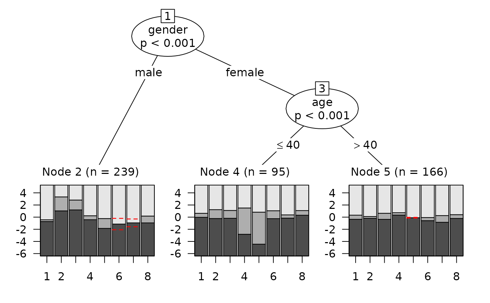

Detects Differential Item Functioning (DIF) by recursively splitting
the sample on one or more covariates using psychotree::raschtree()
(dichotomous data) or psychotree::pctree() (polytomous data),
then computes per-split effect-size measures for every item – the
Mantel-Haenszel odds-ratio (Holland & Thayer, 1986), on the Delta scale
developed at the Educational Testing Service (ETS; Zwick, 2012), for
dichotomous data, or the partial gamma coefficient for polytomous data – and
classifies them into ETS A/B/C categories (Bjorner et al., 1998). Optionally,
an iterative purification step (Henninger et al., 2025) is applied, and tree
stability across resamples can be assessed via
stablelearner::stabletree() (Philipp et al., 2018).
Usage
RMdifTree(
data,
covariates,
model = c("auto", "PCM", "RM"),
effect_size = c("auto", "MH", "pgamma"),
purification = c("none", "iterative"),
p_adj = c("none", "fdr", "bonferroni"),
thresholds = c(0.21, 0.31),
alpha = 0.05,
prune_negligible = FALSE,
stability = FALSE,
stability_B = 100L,
stability_sampler = c("subsampling", "bootstrap"),
min_n_per_level = 20L,
on_rescale = c("message", "warning", "stop"),
output = c("kable", "dataframe", "tree", "plot", "list"),
...
)Arguments
- data
A data.frame or matrix of item responses (non-negative integers, 0-based). One column per item. Items only – pass covariates separately via
covariates.- covariates
A data.frame with
nrow(data)rows giving the DIF covariates. Columns may be numeric (continuous), factor, ordered factor, or logical. At least one column is required.- model
One of
"auto"(default),"PCM", or"RM"."auto"picks RM when the data are dichotomous (max response = 1) and PCM otherwise.- effect_size
One of
"auto"(default),"MH"(Mantel-Haenszel), or"pgamma"(partial gamma)."auto"uses MH for RM and partial gamma for PCM.- purification
"none"(default) or"iterative". Iterative purification recomputes the effect size while excluding items already classified as DIF from the matching score (Bjorner et al., 1998).- p_adj
Multiple-testing adjustment for the partial-gamma classification:
"none"(default),"fdr"(Benjamini & Hochberg), or"bonferroni". Ignored for MH (which uses the ETS test directly).- thresholds
Numeric length-2 vector with the partial-gamma B/C boundaries (default
c(0.21, 0.31)). Ignored for MH (the ETS Delta-scale boundaries 1.0 / 1.5 are used).- alpha
Significance level for the A/C tests. Default
0.05.- prune_negligible
Logical. If
TRUE, splits whose every item is classified as A are pruned from the tree. DefaultFALSE.- stability
Logical. If
TRUE, runsstablelearner::stabletree()on the fitted tree to assess variable-selection and cutpoint stability across resamples. DefaultFALSE.- stability_B
Integer. Number of resamples for stability assessment. Default
100.- stability_sampler
One of
"subsampling"(default) or"bootstrap". Subsampling is recommended for tree stability because bootstrap resamples can drop levels of categorical covariates, breaking the model fit on small subsamples.- min_n_per_level
Integer. Minimum count required for any factor level in
covariates. Default20. Set to0to disable.- on_rescale
One of
"message"(default),"warning", or"stop". Controls how the function reports the situation in which one or more items have no responses in their lowest category within a terminal node of the tree (psychotree silently rescales those items per node, which leaves the per-node item parameters on a different metric). The MH and partial-gamma effect sizes reported here are computed on the raw responses and are not affected. The diagnostic concerns only the per-node item parameters that are visible viaplot(tree).- output
One of
"kable"(default),"dataframe","tree","plot", or"list"."kable"renders the per-split per-item effect-size table as aknitr::kable();"dataframe"returns the underlying tidy data.frame;"tree"returns the augmented partykit tree object;"plot"returns the partykit tree plot with item names on the terminal-node x-axis (tp_args = list(names = TRUE));"list"returns both views from a single fit, aslist(table = <data.frame>, tree = <tree object>). For full control over the plot, useoutput = "tree"and callplot()on the result with your owntp_args. Whenstability = TRUE, the stability summary is attached asattr(result, "stability")(a small data.frame) andattr(result, "stability_kable")(pre-rendered kable).- ...
Additional arguments forwarded to
psychotree::raschtree()orpsychotree::pctree(), e.g.minsize,alphafor the parameter-instability test. Note: thisalpha(the tree-fitting argument) is independent of thealphafor ETS classification above; pass it via....
Value
Depending on output:
"kable"A
knitr_kableobject with one row per (split node x item), grouped by node viapack_rows-style section headers. The caption summarises model, effect-size measure, purification, and (if requested) stability."dataframe"A data.frame with one row per (split node x item): columns
NodeID,Split(human-readable description of the split),Variable,Direction,Item,EffectSize,SE,Class(A/B/C),Flagged(TRUE for B or C),n_left,n_right."tree"The fitted partykit tree object with class
c("RMdifTree", ...), with effect-size results stored attree$info$effectsize."plot"A plotted partykit tree.
"list"A list with both views from a single fit:
table(the"dataframe"result, with its attributes) andtree(the"tree"result).
Stability results (when stability = TRUE) are attached to the
return value as attr(result, "stability") (data.frame) and
attr(result, "stability_kable") (pre-rendered kable).
Details
Continuous covariates (e.g., age in years) and interactions among
multiple covariates are handled natively by the model-based
recursive-partitioning machinery of partykit / psychotree.
ETS Delta-scale Mantel-Haenszel. The MH common odds ratio \(\hat{\alpha}_{MH}\) is mapped to the ETS Delta scale via \(\Delta_{MH} = -2.35 \log \hat{\alpha}_{MH}\). The classification rules (Holland & Thayer, 1988; Zwick, 2012) are:
Class A: \(|\Delta_{MH}| < 1\) or test of \(\Delta_{MH} = 0\) not rejected at
alpha.Class C: \(|\Delta_{MH}| \ge 1.5\) and test of \(|\Delta_{MH}| \le 1\) rejected at
alpha.Class B: otherwise.
easyRasch2 uses the sign convention of effecttree: positive
\(\Delta\) indicates that the item is more difficult for the second
(reference) group.
Partial gamma. iarm::partgam_DIF() provides the gamma
estimate and SE per item. ETS-style classification follows Bjorner et
al. (1998): A if \(|\gamma| < 0.21\) or the test of \(\gamma = 0\)
is not rejected at alpha; C if \(|\gamma| > 0.31\) and the
test of \(|\gamma| \le 0.21\) is rejected at alpha; B
otherwise.
Rule-of-thumb caveat. The A/B/C boundaries (Delta 1.0 / 1.5;
gamma 0.21 / 0.31) are conventions carried over from large-scale
educational testing, not values calibrated to the sample and items at
hand – in contrast to the simulation-based cutoffs used elsewhere in
this package – so the classification is best read as a rough
magnitude guide rather than a calibrated test. For a sample-calibrated
partial-gamma DIF test, see RMdifGamma() with an
RMdifGammaCutoff() object (optionally with p_value = TRUE).
Continuous and interaction effects. The recursive
partitioning step automatically handles continuous covariates (the
parameter-instability test searches for the optimal cutpoint) and
multivariate interactions (later splits are conditional on earlier
ones). To assess sensitivity of variable selection and cutpoints to
the particular sample, set stability = TRUE.
Stability assessment. When stability = TRUE, the same
tree-fitting call is replayed on stability_B resamples of the
data. The returned stabletree object reports, per covariate,
the proportion of resamples in which it was selected at any split,
and (for continuous covariates) the empirical distribution of
cutpoints. Stability is independent of effect-size classification –
a stable split with a negligible effect is still negligible, and a
large effect on an unstable split should be interpreted with care.
Cost is roughly stability_B times the original fitting time.
Acknowledgement. The effect-size machinery – MH and partial gamma per node, iterative purification, ETS A/B/C classification – follows the implementations by Henninger & Radek in the GitHub packages raschtreeMH and effecttree. The relevant code has been adapted here under the MIT licence (see file header).
References
Bjorner, J. B., Kreiner, S., Ware, J. E., Damsgaard, M. T., & Bech, P. (1998). Differential item functioning in the Danish translation of the SF-36. Journal of Clinical Epidemiology, 51(11), 1189-1202. doi:10.1016/S0895-4356(98)00111-5
Henninger, M., Debelak, R., & Strobl, C. (2023). A new stopping criterion for Rasch trees based on the Mantel-Haenszel effect size measure for DIF. Educational and Psychological Measurement, 83, 181-212. doi:10.1177/00131644221077135
Henninger, M., Radek, J., Debelak, R., & Strobl, C. (2025). Partial credit trees meet the partial gamma coefficient for quantifying DIF and DSF in polytomous items. Behaviormetrika, 52, 221-257. doi:10.1007/s41237-024-00252-3
Holland, P. W., & Thayer, D. T. (1986). Differential item performance and the Mantel-Haenszel procedure. ETS Research Report Series(2). doi:10.1002/j.2330-8516.1986.tb00186.x
Philipp, M., Rusch, T., Hornik, K., & Strobl, C. (2018). Measuring the stability of results from supervised statistical learning. Journal of Computational and Graphical Statistics, 27, 685-700. doi:10.1080/10618600.2018.1473779
Asamoah, N. A. B., Turner, R. C., Lo, W.-J., Crawford, B. L., & Jozkowski, K. N. (2025). Impacts of DIF Item Balance and Effect Size Incorporation With the Rasch Tree. Educational and Psychological Measurement. doi:10.1177/00131644251370605
Zwick, R. (2012). A review of ETS differential item functioning assessment procedures: Flagging rules, minimum sample size requirements, and criterion refinement. ETS Research Report Series(1). doi:10.1002/j.2333-8504.2012.tb02290.x
Examples
# \donttest{
if (requireNamespace("psychotree", quietly = TRUE) &&
requireNamespace("partykit", quietly = TRUE) &&
requireNamespace("difR", quietly = TRUE) &&
requireNamespace("iarm", quietly = TRUE)) {
data("DIFSimPC", package = "psychotree")
items <- as.data.frame(as.matrix(DIFSimPC$resp))
covs <- DIFSimPC[, c("age", "gender", "motivation")]
# Default: kable of per-split effect sizes
RMdifTree(items, covariates = covs)
# Tidy data.frame -- one row per (split node x item)
df <- RMdifTree(items, covariates = covs, output = "dataframe")
df[df$Flagged, ]
# Tree object (for plotting via partykit::plot)
tree <- RMdifTree(items, covariates = covs, output = "tree")
plot(tree)
# Stability assessment refits the tree on B resamples.
# (use more resamples, e.g. 100+, in real analyses)
if (requireNamespace("stablelearner", quietly = TRUE)) {
kbl <- RMdifTree(items, covariates = covs,
purification = "iterative", p_adj = "fdr",
stability = TRUE, stability_B = 25)
kbl # main effect-size kable
attr(kbl, "stability_kable") # pre-rendered stability kable
attr(kbl, "stability") # raw stability data.frame
}
}

#> Error in root.matrix(switch(vcov, opg = chol2inv(chol(meat)), info = bread, :
#> Matrix is not positive semidefinite
#> Error in root.matrix(switch(vcov, opg = chol2inv(chol(meat)), info = bread, :
#> Matrix is not positive semidefinite
#> Error in root.matrix(switch(vcov, opg = chol2inv(chol(meat)), info = bread, :
#> Matrix is not positive semidefinite
#> Stability assessment notes (suppressed during fitting): 169 'minimum score not zero' rescaling warning(s); 21 'items with null categories' warning(s). These reflect sparsity in some resamples and are normal sampling variability; selection-frequency and cutpoint summaries are based on resamples that completed successfully.
#> Variable Type Selected_orig Selection_freq_pct Cutpoint_mean Cutpoint_sd
#> 1 age numeric TRUE 100 44.10811 9.845427
#> 2 gender factor TRUE 100 NA NA
#> 3 motivation ordered FALSE 4 NA NA
# }